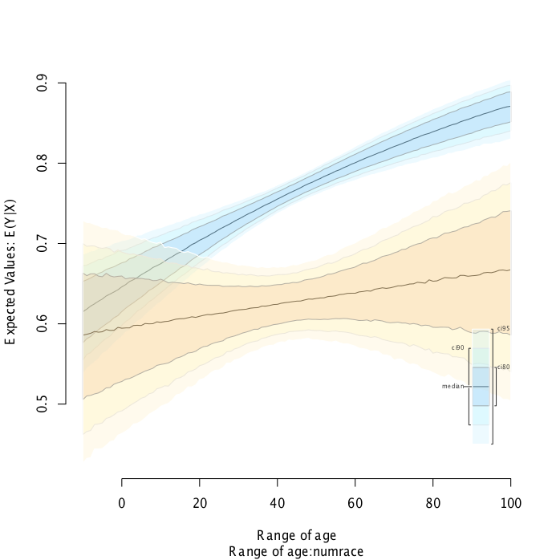

Zelig 5.0 is the latest version of the Zelig framework for interfacing with a wide range of statistical models and analytic methods in the R statistical programming enviornment. This release expands the set of models available, while simplifying the model wrapping process, and solving architectural problems by completely rewriting into R’s Reference Classes for a fully object-oriented architecture.
This guide is designed to get you up and running with the current alpha release, Zelig 5.0.1. For more detailed tutorials see individual model vignettes. COMMENT- NEED MORE INFO HERE ABOUT TUTORIALS - OR THIS MIGHT NOT BE BEST PLACE FOR THIS - MOVE LOWER WITH MODELS.
Before using Zelig, you will need to download and install both the R statistical program and the Zelig package:
Installing R
To install R, go to www.r-project.org/ Select the CRAN option from the left-hand menu (CRAN is the Comprehensive R Archive Network where all files related to R can be found). Select a CRAN mirror closest to your current geographic location (A CRAN mirror is a location NEED_INFO). Follow the instructions for downloading R for Linux, Mac OS X, or Windows.
Installing Zelig
Becuase Zelig 5.0.1 is still an alpha release and is not yet available on CRAN, it must be downloaded from Github using the devtools package. Open R after it has been successfully installed. At the terminal prompt (>), type in the following commands verbatim: (Note that the wording after the # sign is just a note to help you know what the command is doing.) .. sourcecode:: r
> install.packages(“devtools”) # This installs devtools package, if not already installed > library(devtools) # This loads devtools > install_github(‘IQSS/Zelig5’) # This downloads Zelig 5.0.1 from the IQSS Github repo
Once you have successfully typed these commands, you will see a message *DONE (Zelig5)
COMMENT- THIS SECTION WAS A BIT CONFUSING, BECAUSE YOU HAVE ME LOADING THE ZELIG LIBRARY BELOW. DO I NEED TO DO THIS TWICE? IS THERE A DIFFERENCE BETWEEN THE ZELIG AND ZELIG5 LIBRARY? IF I DO NEED TO DO TWICE, I WOULD REORGANIZE AND GROUP TOGETHER. Loading Zelig, by typing library(Zelig) into the R command line, will also load optional libaries and (for the most part) install required dependencies. Therefore, it is not necessary to load any package other than Zelig at startup. COMMENT- SHOULD ALL OF THESE SAY ZELIG5??
Updating Zelig
To update your Zelig installation to the latest release use the updated.packages() function. COMMENT- I TRIED THIS NOTHING HAPPENED. WASN’T SURE IF I NEED ADDITIONAL INFO TO INCLUDE IN COMMAND LINE? OR MAYBE THIS IS JUST BECAUSE IT IS THE ALPHA VERSION?rst version.
Loading Zelig
After installing both R and Zelig, Zelig can be loaded like any other R package: COMMENT-THIS SOUNDS LIKE IT ASSUMES PREVIOUS USE/FAMILIARITY WITH R. ALSO - MIGHT BE HELPFUL TO ADD A BRIEF PARENTHETICAL COMMENT ABOVE ABOUT “PACKAGE”. above about “package”.
> library(Zelig5)
Some Zelig models require add-on packages/modules which can be installed using install.packages():
> install.packages("ZeligChoice") #install ZeligChoice add-on package
> library(ZeligChoice) COMMENT- WOULD HAVE BEEN HELPFUL TO KNOW WHAT TO EXPECT. SEEMED LIKE NOTHING HAPPENED TO CONFIRM. EVEN INDICATING THAT THE TERMINAL PROMPT WILL APPEAR IS HELPFUL.
Running Models COMMENT- THIS SECTION WAS THE MOST CONFUSING TO ME. BUT IT MAY BE BECAUSE NOTHING SEEMED TO BE WORKING WITH THE MODEL. IT SEEMS LIKE YOU ARE TRYING TO SHOW ME SOMETHING THAT ZELID CAN DO BETTER THAN R ITSELF, BUT IF YOU ARE ASSUMING USER HASN’T USED R (BECAUSE YOU ARE HELPING THEM DOWNLOAD) - I’M NOT SURE YOU NEED TO DO THIS. THE STEPS LISTED BELOW DID NOT LEAD TO SAME OUTPUT AS WEBPAGE. I TRIED IT TWICE. ): IT MAY BE HELPFUL TO GIVE A BRIEF SCENARIO TO GIVE SOME CONTEXT FOR THE DATA. I STARTED WRITING A SENTENCE TO THIS EFFECT...
Imagine a scenario where you want to estimate the distance cars travel, given a specific speed........For example, to implement a least squares regression:
> data(cars) #load toy dataset
> z5 <- zls$new() #initialize Zelig5 least squares object
> z5$zelig(dist ~ speed, data = cars) #estimate ls model
> z5$setx(speed = 30) #set speed to 30 (all other covariates set to means)
> z5$sim(num = 1000) #run 1000 simulations and estiamte quantities of interest
The same model can also be implemented using the zelig(), setx(), and sim() functions, as was the case in previous versions of Zelig: COMMENT- IF THIS IS QUICKSTART GUIDE AND YOU ARE HELPING THEM INSTALL FROM SCRATCH - LIKELY WON’T HAVE FOLKS WHO ALREADY USED ZELIG. MAYBE HAVE A PAGE FOR PREVIOUS ZELIG USERS? OR - CREATE NESTED SECTIONS/DIFFERENT FONT/COLOR/ITALICS WHEN YOU ARE GIVING COMMENTS TO ADVANCED USERS??
> z.out <- zelig(dist ~ speed, model = "ls", data = cars)
> x.out <- setx(z.out, speed = 30)
> s.out <- sim(z.out, x = x.out, num = 1000)
COMMENT- THIS ALSO DID NOT YIELD ANYTHING MEANINGFUL. I WOULD INCLUDE A SAMPLE OF WHAT THE EXPECTED OUTPUT IS.
See the Zelig Model Reference for a complete listing of all supported models, including links to tutorials and model implementation.
Quantities of Interest
A major feature of Zelig is the translation of model parameter estimates into interpretable quantities of interest (QIs). These QIs, which include expected and predicted values as well as first differences COMMENT- NOT SURE WHAT “FIRST DIFFERENCES” IS, can be accessed via the $sim.out method:
> z5$sim.out #or
> summary(s.out)
COMMENT- THIS CODE GAVE ME SOMETHING THAT DID NOT MAKE SENSE.
Plots
A second major Zelig feature is the ease of graphically presenting QIs. Using the plot() function with the Zelig model object (e.g., z5 or s.out objects above) will produce ready-to-use plots with labels and confidence intervals. COMMENT- THIS DID NOT WORK. I DID NOT GET ANY PLOTS. I TRIED A FEW COMBINATIONS THINKING I WAS USING THE WRONG OBJECT - BUT NOTHING WORKED. I COULDN’T REPLICATE GRAPHS.
Plots of qi’s from binary choice model: COMMENT- I FOUND THE LOWERCASE QI’S TO NOT “POP” ENOUGH - NOT SURE IF THESE ARE STANDARD LINGO IF FIELD. IF NOT - MAYBE QIS.

Plot of expected values across range of simulations:
The following models hare currenlty supported in Zelig 5.0:
Use the exponential duration regression model if you have a dependent variable representing a duration (time until an event). The model assumes a constant hazard rate for all events. The dependent variable may be censored (for observations have not yet been completed when data were collected).
Syntax
> z.out <- zelig(Surv(Y, C) ~ X, model = "exp", data = mydata)
> x.out <- setx(z.out)
> s.out <- sim(z.out, x = x.out)
Exponential models require that the dependent variable be in the form Surv(Y, C), where Y and C are vectors of length n. For each observation i in 1, …, n, the value $y_i$ is the duration (lifetime, for example), and the associated $c_i$ is a binary variable such that $c_i = 1$ if the duration is not censored (*e.g.*, the subject dies during the study) or $c_i = 0$ if the duration is censored (*e.g.*, the subject is still alive at the end of the study and is know to live at least as long as $y_i$). If $c_i$ is omitted, all Y are assumed to be completed; that is, time defaults to 1 for all observations.
Input Values
In addition to the standard inputs, zelig() takes the following additional options for exponential regression: